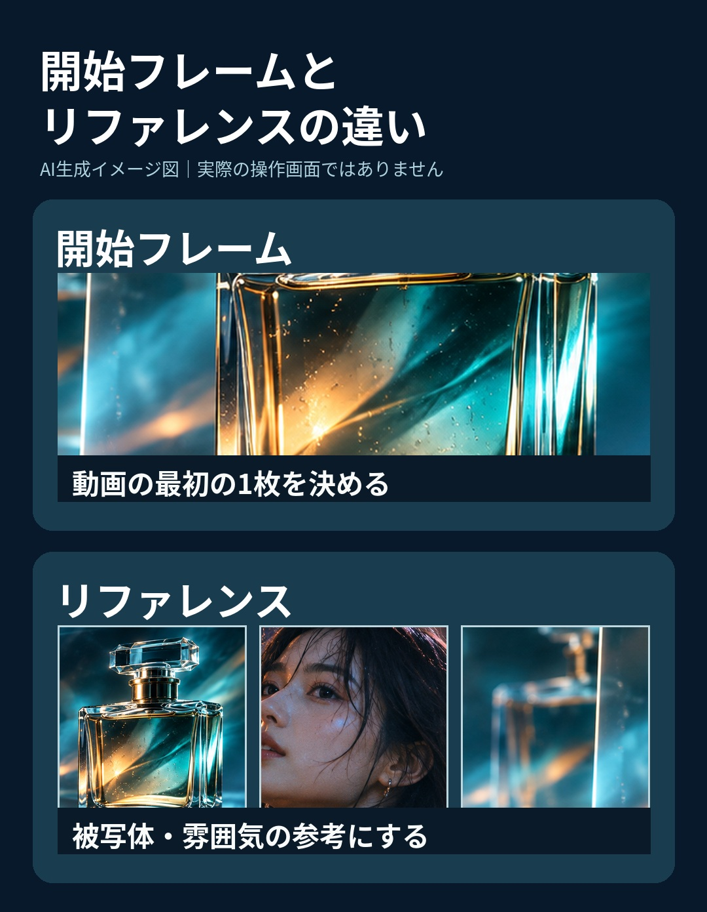
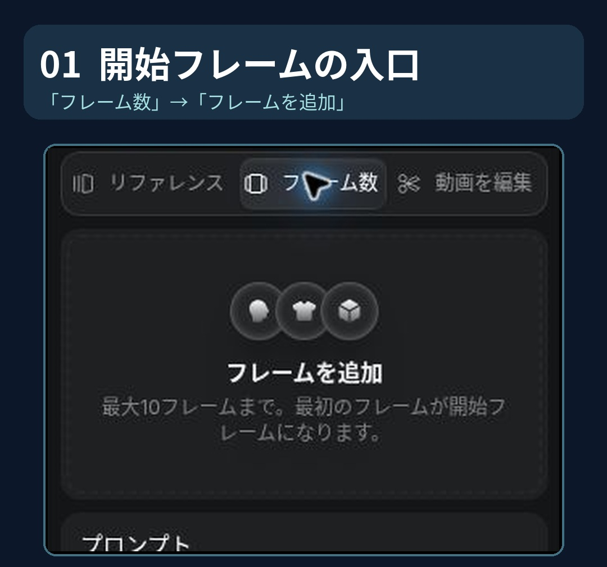
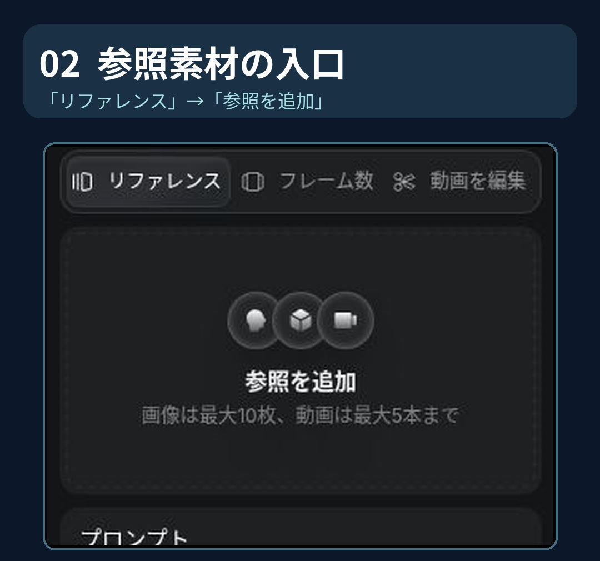

Higgsfieldで写真を動画の最初に使うには？Kling 4.0「開始フレーム」の設定とリファレンスの違い
著者：AI千葉PR大使
確認日：2026年11月22日（日本時間）
PR：この記事にはアフィリエイトリンクが含まれます。リンク経由の申し込みで、運営者に報酬が入る場合があります。
「お気に入りの商品写真を、AIで少しだけ動かして動画にしたい」。そんなとき、Higgsfield内のKling 4.0では、最初に見せたい写真を「開始フレーム」として指定する方法があります。画面に表示される「フレーム数」と「リファレンス」は役割が違います。まずはこの違いを押さえましょう。
HiggsfieldとKling 4.0は別の名前
Higgsfieldは複数のAIモデルや制作機能を使えるサービスです。その中の動画生成モデルの一つが「Kling 4.0」。操作画面で選ぶモデルによって、使える入力方法や設定は変わります。
2026年11月22日に確認したHiggsfield公式案内では、Kling 4.0は画像から動画を作る機能のほか、開始・終了フレーム、複数のキーフレーム、参照素材を使った生成に対応しています。ただし、表示内容や利用条件はプラン・機能の更新などによって変わる場合があります。
「開始フレーム」は動画の最初の1枚
開始フレームは、動画が始まる瞬間の見た目を指定する画像です。例えば、香水瓶を机の中央に置いた写真を最初の一枚にすれば、構図・色・被写体を考える出発点になります。
写真に写っているものは画像がすでに説明しているため、プロンプトでは「何がどう動くか」「カメラがどう動くか」を中心に書くと整理しやすくなります。元の画像を指定すれば必ず完全に同じ状態が続く、という保証ではありません。完成動画は必ず確認しましょう。

日本語画面で見る開始フレームの入口
ここでは、2026年11月22日に取得されたKling 4.0の生成前の日本語画面を紹介します。アップロードや有料生成の実行・成功は確認していません。
手順1：Kling 4.0を選ぶ
Higgsfield公式の手順では、Video（動画）のCreate Video（動画作成）を開き、モデル選択でKling 4.0を選びます。UIの日本語表記は利用環境で変わる可能性があるため、まずモデル名が一致しているかを確認してください。
手順2：「フレーム数」に切り替える
今回の日本語画面では、プロンプト欄の上に「リファレンス」「フレーム数」「動画を編集」の切り替えが表示されています。開始画像を使う場合は「フレーム数」を選びます。中央の「フレームを追加」が、画像を入れる入口です。

手順3：最初の画像を配置する
「フレームを追加」から手元の画像を用意し、最初のフレームに使う位置へ割り当てる流れです。Higgsfield公式は、Framesモードを最初・最後・途中の重要な画面を決めるための機能として説明しています。どの素材が最初のフレームとして設定されたか、表示とプレビューを見て確かめます。
Kling 4.0は複数のキーフレームにも対応しますが、初めてなら最初の1枚から始めると目的を絞れます。画面に複数の枠があるからといって、全部埋める必要はありません。
手順4：プロンプトでは「動き」を書く
以下は説明用の提案例です。実際にこの指示で生成を成功させたという意味ではありません。
机に置かれた香水瓶は、最初の画像の構図を基準にする。瓶の内側を光がゆっくり通り、カメラは5秒かけて少しだけ近づく。背景の光は穏やかに変化する。字幕なし、BGMなし。
商品写真を使うなら「瓶が突然移動しない」「カメラだけが少し寄る」といった、一度に確認できる動きを一つ選ぶ考え方が役立ちます。初回で思い通りにならなければ、画像と文章を同時にすべて変えるのではなく、まず一つの要素だけ見直します。
手順5：設定と費用を確認してから生成する
動画の長さ、縦横比、解像度、音声など、利用画面で選べる設定を確認します。Higgsfield公式は、Kling 4.0で3〜30秒、720p・1080pなどの設定を案内しています。ただし、選べる範囲はモードやプラン・更新時期で変わることがあります。
Generateを押す前に、表示されるクレジット消費や契約条件を必ず確認してください。 この解説のために有料動画生成は行っていません。
「リファレンス」は何が違う？
「リファレンス」は、被写体の見た目、雰囲気、動きなどを参考素材として渡す入口です。日本語画面には「参照を追加」と表示され、画像や動画を登録する案内が見えます。

両者の違いは、開始フレーム＝冒頭の画面を決める／リファレンス＝制作の参考素材を渡すと考えると分かりやすいでしょう。商品を最初の一秒から見せたいなら、まず開始フレーム。人物の服装や別角度の参考を渡したいなら、リファレンスの使い方を検討します。実際の対応素材数や選択可否は操作画面の表示を優先してください。
よくある疑問
「最初の写真」があれば、必ずそのまま動画になる？
必ずではありません。開始画像は出発点を指定するためのものですが、被写体の形やカメラの動きが崩れる場合もあります。生成後の冒頭と全体を確認することが必要です。
リファレンスと開始フレームは同時に使える？
モードの組み合わせに制約がある場合があります。Kling公式ガイドでは独立したモードとして説明されているため、現在使える組み合わせはHiggsfieldの実画面で確認してください。
無料で試せる？
ログインや画面の閲覧と、動画生成に必要なクレジット・利用権限は別です。無料枠やUnlimitedの適用範囲をこの記事だけで断定せず、生成直前の公式表示を確認しましょう。
まずは「動きの少ない1枚」から
最初は商品一つを大きく写した写真など、構図がはっきりした素材がおすすめです。開始フレームを決め、プロンプトで動きを一つ指定し、生成直前の条件を確かめる。この順序なら、どの操作が何のために必要かを理解しやすくなります。
PR： Higgsfieldの機能と現在の利用条件を公式サイトで確認する
※上の見出し画像・PRバナー・説明図の映画的ビジュアルはChatGPTで作成したイメージです。Higgsfieldで実際に生成した動画の切り出しではありません。操作画面2点のみ、Higgsfieldの日本語UIを撮影した画像です。
公式出典・確認日
確認日：2026年11月22日（JST）